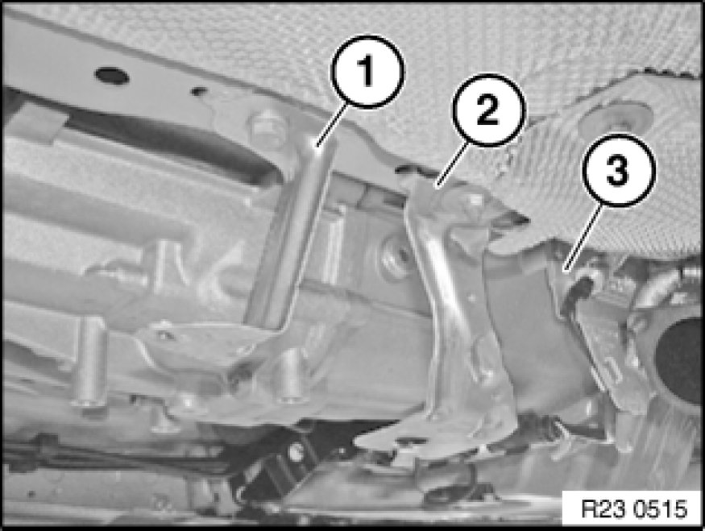
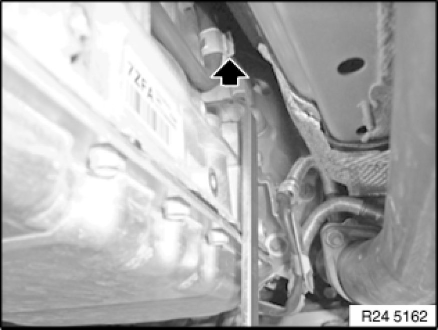

24 11 007 Replacing Sealing Plug (GA6L45R)
24 11 007 - Replacing sealing plug (GA6L45R)

Special tools required:
- 24 4 340 24 4 340 Lever

Important!
After completion of work, check transmission oil level 00 11 237 Checking/Topping Up Fluid Level In Automatic Transmission (GA6L45R).
Use only the approved transmission fluid.
Failure to comply with this requirement will result in serious damage to the automatic transmission!

Necessary preliminary tasks:
- Remove rear underbody protection Removing and Installing/Replacing Rear Underbody Protection

Remove holder (2).

Unlock sealing plug with special tool 24 4 340 24 4 340 Lever in direction of arrow and remove.